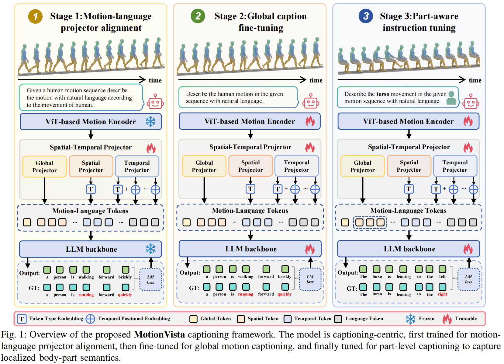
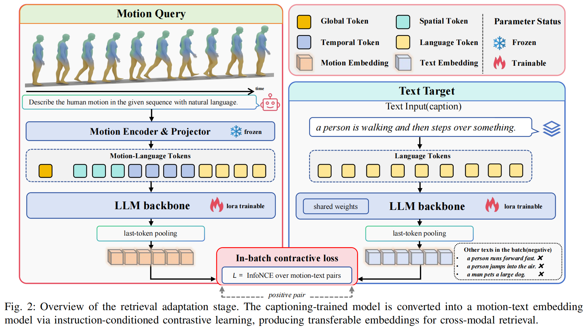
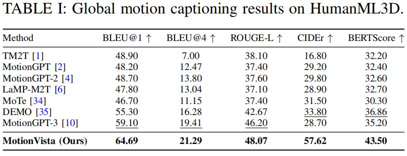
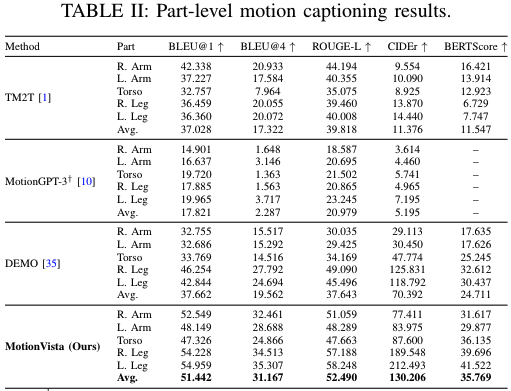
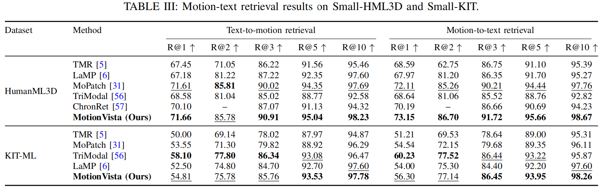

Abstract
Human motion-text alignment aims to establish the semantic correspondence between 3D skeletal motion and natural language, which serves as a foundational capability for both generative and discriminative cross-modal tasks. Since human motion is inherently compositional, existing methods relying on holistic, sequence-level motion granularity often fail to capture the fine-grained part-level kinematic dynamics. Consequently, these approaches are severely limited in downstream applications that require precise cross-modal alignment and part-aware perception. In this paper, we propose MotionVista, a unified part-aware motion-text alignment framework. MotionVista explicitly models body-part articulation and temporal progression via a structured spatial-temporal motion token interface, reorganizing patch-level motion features into global, body-part, and temporal tokens. Powered by this compact interface, the framework is optimized through a progressive global-to-local training strategy, advancing from global captioning to part-aware instruction tuning. Furthermore, the trained model is adapted for motion-text retrieval via instruction-conditioned contrastive learning, successfully bridging generative description and discriminative matching. Extensive experiments demonstrate that MotionVista achieves state-of-the-art performance on global motion captioning and consistently outperforms baselines in part-level motion captioning by robustly grounding localized dynamics. Moreover, it also yields highly competitive motion-text retrieval results without requiring part-level text annotations, confirming that our learned unified alignment representations are intrinsically versatile, discriminative, and transferable.
Methodology

Experiments
Quantitative Results



Qualitative Results
Global Captioning Results
Prediction: a person walks forward, turns around and sits on a chair, then gets up and walks away.
Ground-Truth: a person walks forward, briefly sits down, and then stands and walk back in the opposite direction.
Prediction: a person walks forward, bends down to pick up an object and sets it on a table then turns around and walks back.
Ground-Truth: this person walks forward and picks something up then walks back.
Prediction: a person walks forward with arms swinging, then turns around and walks back.
Ground-Truth: a man walks forward, turns around and walks back.
Prediction: a person walks forward, steps over an object and continues walking.
Ground-Truth: a person walks forward gingerly, then walks to the back of the space and turns around.
Part-Level Captioning Results
Ground Truth
Overall: A person stands still then they throw a football.
Right arm: The right arm is bending from straight to bent when preparing to throw and then extending from bent to straight when releasing the ball.
Left arm: The left arm remains relaxed by the side of the body.
Torso: The torso leans forward slightly during the release of the football, aligning with the direction of the throw.
Right leg: The right leg is stationary, providing balance.
Left leg: The left leg is stationary, providing balance.
MotionVista (Ours)
Overall: A person throws something with their right hand.
Right arm: The right arm is bending from straight to bent when preparing to throw and then extending from bent to straight when releasing the object.
Left arm: The left arm remains relaxed by the side of the body.
Torso: The torso leans forward slightly during the release of the object, aligning with the direction of the throw.
Right leg: The right leg remains stationary, providing balance.
Left leg: The left leg is stationary, providing balance.
Ground Truth
Overall: A person does a threatening crouching walk and then raises their arms.
Right arm: The right arm is bending from straight to bent when crouching and then extending from bent to straight when raising the arms.
Left arm: The left arm is bending from straight to bent when crouching and then extending from bent to straight when raising the arms.
Torso: The torso is leaning forward slightly when crouching and then straightening up when standing.
Right leg: The right leg is bending from straight to bent when crouching and then extending from bent to straight when standing.
Left leg: The left leg is bending from straight to bent when crouching and then extending from bent to straight when standing.
MotionVista (Ours)
Overall: A person walks backwards, bends down to the ground and crawls forward.
Right arm: The right arm is bending from straight to bent when crouching and then extending from bent to straight when crawling.
Left arm: The left arm is bending from straight to bent when crouching down and then extending from bent to straight when crawling forward.
Torso: The torso is leaning forward, lowering the body when crawling and then straightening up when standing.
Right leg: The right leg is bending from straight to bent when crouching down and then extending from bent to straight when crawling forward.
Left leg: The left leg is bending from straight to bent when crouching and then extending from bent to straight when crawling.
More details can be found in our paper.
BibTeX
@article{motionvista2026,
title = {MotionVista: A Unified Framework for Part-Aware Human Motion-Text Alignment},
author = {Fulong Liu and Liang Xu and Chengqun Yang and Fei Xu and Weili Zeng and Yichao Yan and Xiaokang Yang},
journal = {[Journal]},
year = {2026}
}